機能ガイド · 2026年11月8日更新
TurboWarp Plusで作品をつくる
作品を開いたら、スプライト、コード、ステージを作業しやすい位置に並べます。作品全体を検索しながら編集し、拡張や素材の保存方法を決めて、SB3や単一HTMLに書き出します。
Scratch 3と標準TurboWarpで保存したSB3は、どちらもPlus Editorで開けます。Plus固有の機能には、対応する拡張や専用データなどが必要なものがあります。
Scratch・TurboWarpのSB3互換性と機能一覧（Markdown）
操作名と配置は2026年11月8日時点の公開版（c7f25ed、TurboWarp Plus Editor 0.2.0-rc.3）で確認しています。「開発中」は試作や開発版で確認した機能、「試作」は公開版で使えるものの対象を限定している機能、「一部の機能拡張で利用可能」は対応する拡張が必要な機能です。図版は撮影時点の画面で、一部の詳細図は前回の撮影を引き継いでいます。画像を選ぶと元の大きさで開けます。 撮影条件
標準のTurboWarpに加わる機能
| 作業 | 標準のTurboWarp | Plusで加わる操作 |
|---|---|---|
| 作品を開く | SB3の読み込みと拡張の実行確認 | 読み込みの経過表示、公式カタログ、読み込みの診断 |
| 作品を管理する | SB3ファイル単位の保存 | 作品フォルダの読み書き、ローカルGitの差分と履歴 |
| 作業画面を整える | コード・ステージ・スプライトの基本配置 | パネルの分割、パネルとパレットの別画面、ステージの別表示、配置復元 |
| 編集する | ブロックの入力欄やメニュー | 作品全体の検索と置換、編集メニュー、検索付きの横型パレット、ミニマップ、対応するフォームとYAMLタブ |
| 再利用する | バックパックなどで再利用 | スクリプトやステージのファイル転送、バンドル素材の追加 |
| 保存して渡す | SB3の保存と標準Packager | 上書き保存と名前を変えて保存、組み込みデータの格納方式、拡張コードの保存方式、Plus拡張を同梱したHTML |
作品を用意する
1. 作品を新しく作る・SB3を開く
公開版のエディターを日本語で開くと、新しい作品から始められます。作品の作成・読み込み・保存・書き出しは、画面上部の「ファイル」メニューにまとまっています。

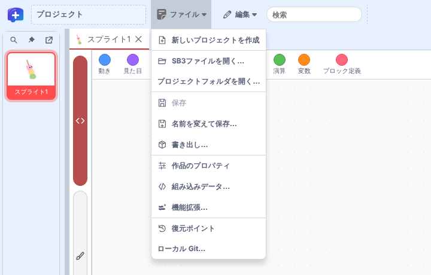
| 項目 | できること | 説明する章 |
|---|---|---|
| 新しいプロジェクトを作成 | 編集中の作品を閉じ、新しい作品を始める | この章 |
| SB3ファイルを開く… | 手元の .sb3 を開く。旧形式の .sb、.sb2 も選べる | この章、2章 |
| プロジェクトフォルダを開く… | sb3-toolchainで展開した作品フォルダを開く | 6章 |
| 保存／名前を変えて保存… | 開いたファイルやフォルダを更新する／名前・保存先・格納方式を選んでSB3を作る | 35章 |
| 書き出し… | 実行・配布用のファイルを作る | 40章 |
| 作品のプロパティ | タイトル・URI・作者などを記入し、作品の診断を開く | 36章、37章、4章 |
| 組み込みデータ… | ソースデータと素材の格納方式を選び、バンドル素材を作品に追加する | 39章、34章 |
| 機能拡張… | 使用中の拡張の格納方式を変え、拡張を追加する | 3章、38章 |
| 復元ポイント | TurboWarpが定期的に記録した復元ポイントから作品を戻す | 35章 |
| ローカル Git… | リポジトリの変更・差分・履歴を確認する | 7章 |
SB3ファイルを開いた場合、旧形式の .sb、.sb2 は上書き保存の対象になりません。編集後は「名前を変えて保存…」で .sb3 として保存します。
2. 読み込みの経過を確かめる
SB3を開いている間、画面に現在の工程と「読み込み履歴」が表示されます。大きな作品や多くの拡張を含む作品で、どこに時間がかかっているかを確かめられます。
| 表示 | 行っていること |
|---|---|
| プロジェクトの読み込みを準備中… | ファイルを受け取り、読み込みを始める |
| SB3 内の作品データを確認中… | Plusの組み込みデータや拡張の保存情報を確かめる |
| SB3 を検査・展開中… | ZIPの構造を検査して展開する |
| プロジェクトを解析中… | 作品データ（project.json）を読み取る |
| 画像・音声を読み込み中… | 素材を読み込む。読み込み済みの件数と総数が並ぶ |
| 拡張機能を読み込み中… | 拡張コードを取得・照合する |
| ユーザーの確認待ち… | 拡張の確認画面で選ぶのを待っている |
| エディターを準備中… | 読み込んだ作品を画面に表示する |
「読み込み履歴」には、完了した工程ごとに時刻と開始からの経過秒数が並びます。読み込みに失敗したときの原因は、作品の診断で確かめます。時間のかかる操作の間は、マウスポインターが待機中の表示に変わります。
3. 作品に拡張を追加し、実行条件を確認する
TurboWarp Plusの一覧から追加する
「ファイル」→「機能拡張…」を開くと、作品で使用中の拡張が一覧になります。「機能拡張の追加」を押すと拡張の追加画面が開くので、「TurboWarp Plus」を選びます。Scratch配置では左下の拡張ボタンも入口になります。追加する拡張をチェックすると、その拡張が必要とする拡張も自動で選ばれます。読み込み元は「すべての読み込み元」でまとめて設定するか、拡張ごとに設定して「追加」を押します。


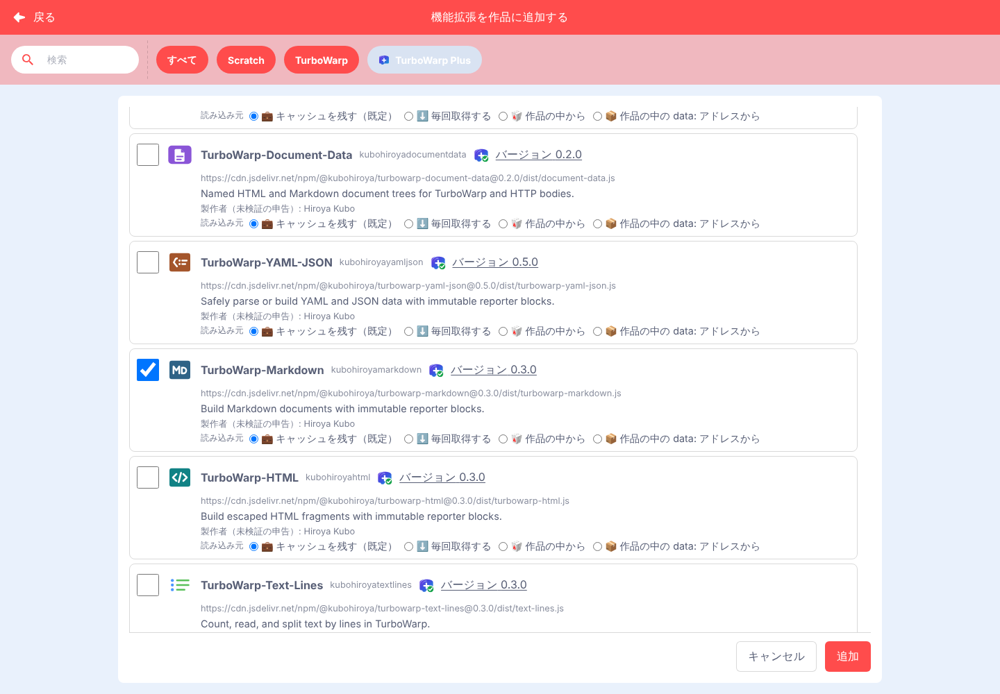
作品を開くときに取得元と実行方法を確認する
確認が必要な拡張を含む作品を開くと、実行前に一覧が出ます。Plus形式の拡張と通常のカスタム拡張をまとめて確認し、取得元を見ながら実行の可否と実行方法を選びます。「サンドボックスなしが必要」と表示された拡張を使う作品は、その条件を許可した場合に開きます。拡張にサンドボックス内で動かす指定があれば、その指定が優先されます。
ZIPにまとめて配布された拡張では、SHA-256が一致したZIP内のコードから、実行前に拡張名を読み取って一覧に表示します。名前を確定できない場合は拡張のIDを表示します。

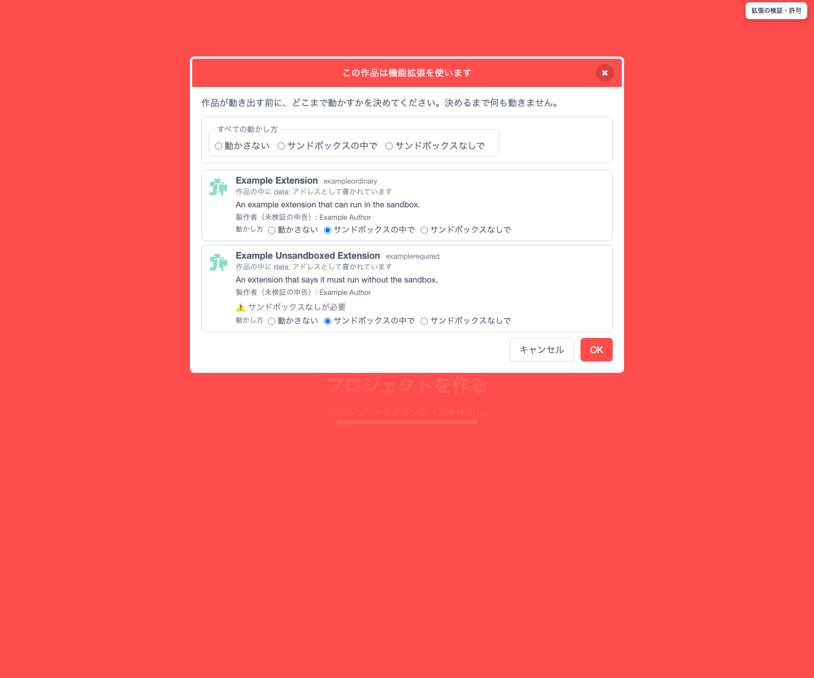
公式カタログから選んで追加した拡張は信頼済みとして扱います。SHA-256で確かめるのは、コードの内容が記録されたものと一致するかどうかです。「サンドボックスなし」を許可すると拡張はエディター側の権限で動くため、内容と提供元を確認してから選びます。
取得に失敗したとき
一覧の取得に失敗した場合は「再試行」で一覧を取り直します。拡張コードの取得に失敗し、やり直せる場合は、選んだ読み込み・保存方法を保ったまま再試行できます。ハッシュの不一致や配信元の404などでは、表示された理由を確認します。実行を許可しなかった拡張のコードは取得せずに読み込みを止めます。
カタログにないURLを指定して追加する場合は、標準の「カスタム拡張機能」を使います。
4. 作品が開けないときに診断を読む
「ファイル」→「作品のプロパティ」を開き、右下の「作品の診断…」を押すと、作品の読み込み結果を確認できます。Plus拡張については、取得元や実行モード、コード照合に使うSHA-256に加え、検証・許可・再試行・失敗のうち、読み込み処理が報告した出来事を確認できます。

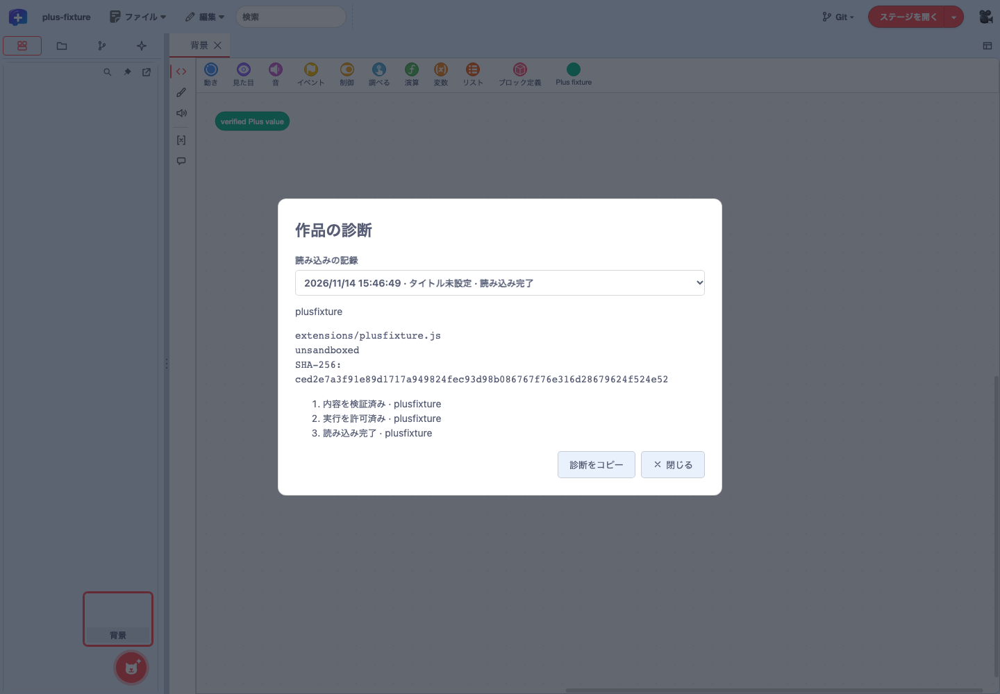
- 上部の「読み込みの記録」で、確認したい回を選びます。最新5回を保持し、各回の最新50件のイベントを表示します。
- 拡張やイベントの行を展開し、取得元・検証結果・理由コード・再試行回数などを確認します。失敗した回も、次の作品を開いた後で選べます。
- 「診断をコピー」で、選んだ回の記録をコピーします。クリップボードへ書き込めない環境では、選択してコピーできるテキストを表示します。
- 「閉じる」またはEscapeでEditorへ戻ります。診断を開閉しても作品データは変わりません。
失敗通知から診断を開く
読み込みに失敗したときは、画面下部に出る通知の「詳細ログを表示」から、その回の診断を開けます。通知を閉じたあとも、直近5回に含まれる記録は作品のプロパティの「作品の診断…」から開けます。やり直せる通信エラーは、確認画面などに出る再試行ボタンを使います。

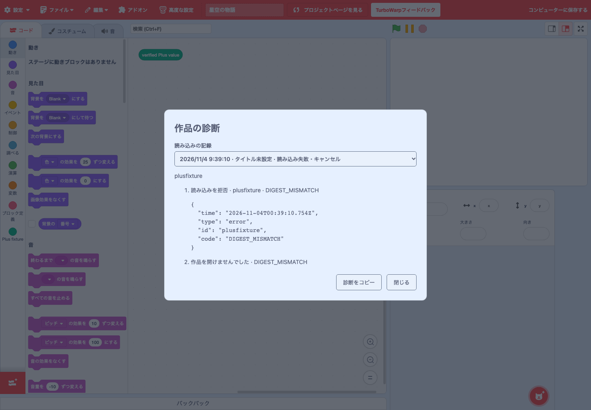
検証・許可の確認
成功・再試行・失敗
回を選択・詳細・コピー
診断の記録が残る範囲
記録はエディターを開いている間だけ保持され、ページを再読み込みすると消えます。コピーした記録には作品名、取得URL、失敗理由などが含まれます。実行を許可するかどうかは、作品を開く際の拡張の確認画面で選びます。
作品フォルダとGitで管理する
5. sb3-toolchainで作品と拡張を管理する
sb3-toolchain は手元で使うNode.jsのツールです。import でSB3を作品データ・素材・埋め込み拡張に展開し、Gitで変更を確認できます。check で展開したデータを検証し、build で配布用のSB3を生成します。展開した作品フォルダは、Plus Editorで直接開いて編集することもできます（6章）。
作品を展開する
作品データ・素材・個別の拡張
必要に応じて拡張を一つにまとめる
- 拡張のメタデータを管理する。 拡張コードのヘッダーに書いた名前、説明、サンドボックスの要件をバンドル時に読み取ります。GitHubのコミットやnpmのバージョンを固定し、埋め込むコードのSHA-256を検証できます。更新時はAPIマニフェストを使って互換性を調べることもできます。
- 複数の拡張を一つにまとめる。 元のコードを残したまま、配布するSB3に複数の拡張を一つの複合拡張として埋め込めます。実行許可は複合拡張全体に対して判断します。
- 公式カタログの信頼条件を確認する。 公開版のPlus Editorでは、TurboWarp Plusファミリー公式カタログの条件を満たす拡張を信頼済みとして扱います。エディターはカタログに載っている取得元やコードのSHA-256を照合してから、個別の承認画面を省略します。
SB3の展開・再生成 · 拡張のバンドル · 公式カタログ
6. 作品フォルダを開いて保存する 試作
sb3-toolchain v1で展開した作品フォルダを、SB3にまとめ直さずに開いて保存できます。フォルダの選択と書き込みには、File System Accessに対応したChromium系ブラウザー（Chrome、Edgeなど）が必要です。
- 「ファイル」→「プロジェクトフォルダを開く…」を選び、作品フォルダを選んで読み書きを許可します。作品データとローカルの画像・音声が読み込まれます。
- ブロックを編集します。
- 「ファイル」→「保存」を選ぶと、フォルダ内の
project.source.jsonが更新されます。保存前に、フォルダが外部で変更されていないかを確かめます。
Gitで差分を確認し、sb3-toolchain build で配布用SB3を作る流れと組み合わせられます。試作段階のため、既存作品の標準ブロックの編集を対象にしています。
7. ローカルGitで変更と履歴を確かめる
「ファイル」→「ローカル Git…」を開き、「リポジトリを選択…」で .git を持つリポジトリのルートを選びます。配下にあるsb3-toolchain v1の作品フォルダを選ぶと、変更一覧と差分がそのフォルダに絞られます。「この作品を開く」で、選んだ作品をEditorで開けます。
- 変更と差分。 ステージ済み・未ステージ・未追跡の変更を分けて表示します。ファイルを選ぶとテキストの差分、バイナリの素材ならサイズを確認できます。
- ブランチと履歴。 現在のブランチ、HEAD、ローカルブランチと直近50件のコミットを表示します。コミットを選ぶと第一親との差分を確認できます。
- 外部での操作のあと。 コマンドラインなどでGitを操作したら「再取得」を押します。「作品を再読込」は、Editorの未保存の編集を確認してから同じ作品を開き直します。
パネルはGitの状態を書き換えません。「GitHub 接続」の欄は、接続先が設定された環境で、現在のブランチとGitHubのHTTPSリモート origin に対するfetch、fast-forwardのみのpull、明示的に許可したpushに使います。File System Accessに対応したChromium系ブラウザーが必要です。linked worktree、サブモジュール、シンボリックリンクは対象外で、作業ツリーの実行権限の変更はブラウザーから確認できません。パネルを外すには起動URLに twPlusLocalGit=0 を指定します。
画面を整える


9. Plus標準配置とScratch配置を使い分ける
Plus標準配置では、左側にスプライト一覧が固定表示された状態で開きます。中央でコードや素材を編集し、右端からステージを開けます。従来のScratch配置で作業するには、エディターのURLに twPlusStandardLayout=0 を指定して開き直します。
10. 左の一覧でスプライトを探す
左側のスプライト一覧で編集する対象を選びます。一覧上部には「スプライトを検索」「スプライト一覧を固定表示」「アンドック」のボタンが並びます。「スプライトを検索」で名前の一部を入力すると、最初に一致したタイルまでスクロールし、そのタイルを枠で強調します。「背景」のタイルからはステージの背景を開けます。

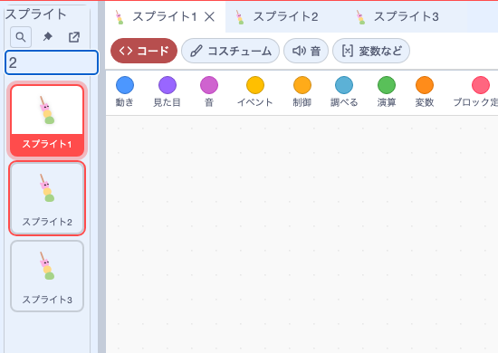
ピンのボタンで固定表示を解除すると、ピンに斜線が付き、一覧は左端に収まります。左端にポインターを置くか「スプライト一覧を展開」を押すと一覧が開きます。固定表示中に一覧の幅を広げると、タイルを複数列に並べられます。作品全体からブロックや素材を探すには、最上段の検索欄を使います。
11. ステージを展開して作品を動かす
Plus標準配置では、右端の「ステージを展開」を押すとステージが開きます。緑旗で実行を始め、一時停止や停止で動きを確認できます。右端に開いたステージは、左辺や下辺の境界をドラッグしてサイズを変えられます。
「ステージの表示」からは「ステージを全画面表示にする」や「ステージを隠す」を選べます。ステージを隠している間も作品の実行は続きます。タブと別ウィンドウへの移動は18章で説明します。

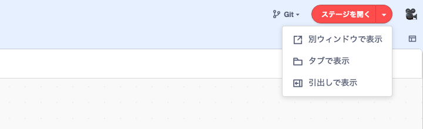
12. 境界を動かして作業領域を調整する
境界にある3点のグリップをドラッグして、隣り合う領域の大きさを変えます。Plus標準配置では、固定したスプライト一覧の幅を調整できます。Scratch配置では、コード領域とステージ側の幅、ステージとスプライト一覧の高さを調整できます。

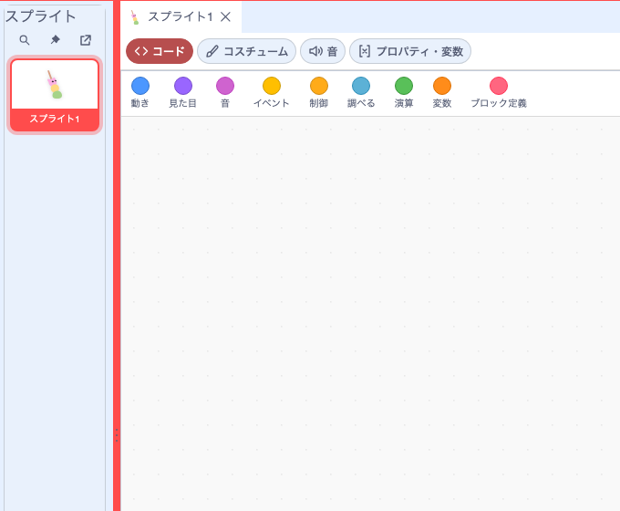
境界にフォーカスを移すと、矢印キーでも調整できます。Enterで初期値に戻ります。Scratch配置で調整した比率はブラウザーに保存されます。URLに twPlusSplitter=0 を指定して開き直すと、この章で扱う境界がなくなります。Plus標準配置でもステージ自体のサイズ調整や編集パネルの分割は引き続き使えます。 境界のグリップ
13. スプライトのタブと編集内容を切り替える
Plus標準配置では、一覧でスプライトを選ぶと編集パネルの上段にタブが開きます。主人公と相手役など、開いたスプライトは上段のタブで切り替えられます。
編集パネルの左端には、縦長のボタンが4つ並びます。上から「コード」（<>）、「コスチューム」（筆）、「音」（スピーカー）、「変数など」（[x]）で、選んでいるボタンに色が付きます。配置は8章の起動直後の画面で確認できます。
14. パネルを左右・上下に分割して並べる
編集パネル右上の「編集パネルのレイアウト」から「パネルを横に分割」または「パネルを縦に分割」を選べます。横に分割すると右側に、縦に分割すると下側に、同じスプライトの編集画面が開きます。

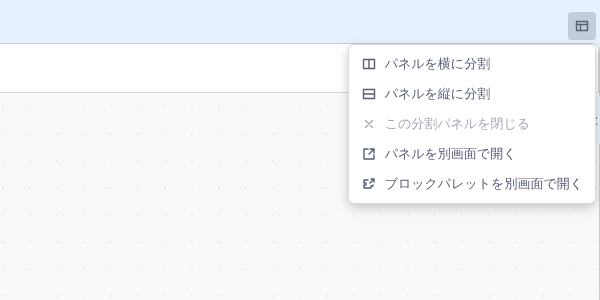
既存のタブを移すには、置きたい領域へドラッグし、配置先の色が変わったところで離します。ドラッグ中はタブのプレビューが表示されます。別のタブ列に落とすと、その列にまとまります。境界をドラッグして広さを調整でき、「この分割パネルを閉じる」が選べるときはパネル全体を閉じられます。
たとえばコードを左、ステージを右に置けます。対応する拡張で開いたYAML文書もタブとして並べられます。 分割ワークスペースの既定化
複数の画面で作業する
15. 複数のコード画面を並べて見比べる
同じスプライトのコードを二つのペインに表示すると、スクロール位置とズーム倍率を別々に保てます。片方で初期化のコードを見ながら、もう片方でイベントのコードを編集するときに使えます。編集したブロックは両方に反映されます。編集するペインを切り替えるには、そのペインをクリックするか、フォーカスを当ててEnterを押します。
初期化のブロックを表示
ブロックの編集を共有
イベントのブロックを表示
開発中 macOS向けDesktop開発版では、同じスプライトをOSの別ウィンドウで開き、コード編集と「取り消し」「やり直し」を共有する動作を検証しています。機能拡張独自の入力欄を別ウィンドウで使う試作は、対応する形式に限って検証しています。 コードペイン · Desktopのコード別窓と検証範囲
16. コスチュームや音の選択を保って編集する
「編集パネルのレイアウト」から「パネルを横に分割」を選び、同じスプライトの「コスチューム」と「音」を左右に開きます。「音」で素材を選ぶと波形が表示され、その下の再生ボタンで試聴できます。音の一覧が空の場合は「音」から追加します。
別のペインに移っても、開いていた編集内容と選んだ素材はペインごとに保持されます。録音中にほかの編集内容へ切り替えても録音ダイアログは閉じず、録音した音は録音を始めたスプライトに保存されます。

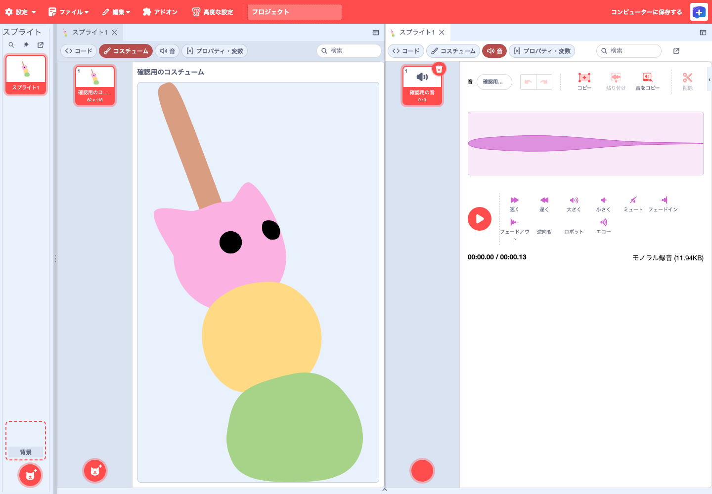
開発中 ローカル統合版では、操作していないペインのコスチュームプレビューの高さに上限を設けています。

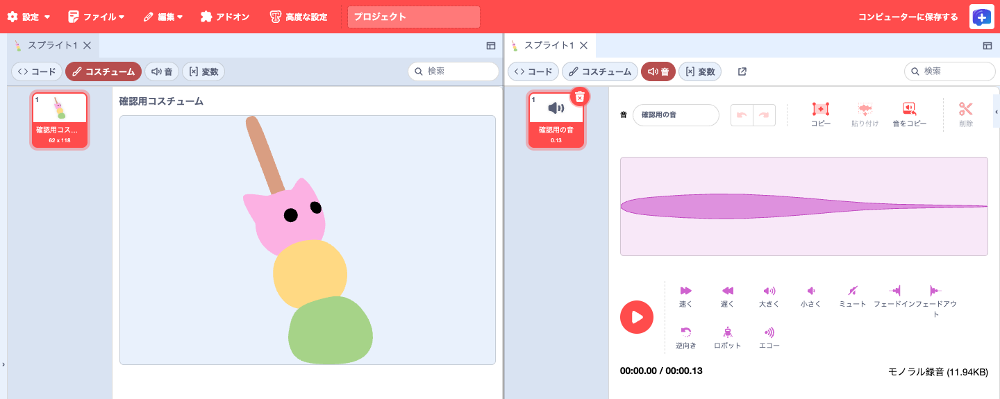
17. 変数を見ながらコードを編集する
ペインを横に分割し、片方で「変数など」、もう片方で「コード」を開きます。変数名の下に「作品」とあれば全スプライトで使う変数、「スプライト」とあれば選択したスプライト用の変数です。値を入力してEnterを押すか、入力欄からフォーカスを外すと確定します。確定前にEscを押すと入力を取り消せます。

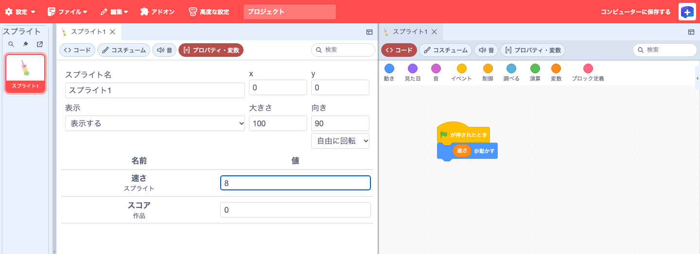
開発中 ローカル統合版では「変数」タブを独立させ、「すべてのスプライト用」と「このスプライトのみ」の見出しで変数をまとめています。

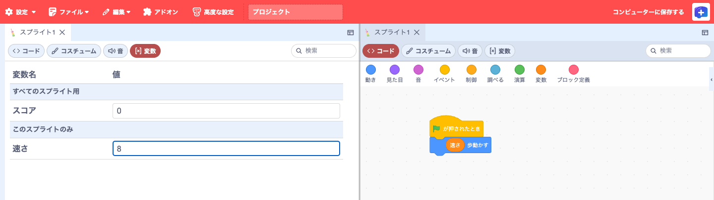
18. ステージを作業領域や別窓に移す
右端からステージを展開し、「ステージの表示」を開きます。コードの隣に置くには「ステージをタブで開く」を選びます。右端へ戻すときは、同じメニューから「ステージを元の位置に戻す」を選ぶか、「ステージ」タブを閉じます。
ブラウザーの別ウィンドウで使うには「ステージを別ウィンドウで開く」を選びます。別ウィンドウの「ステージの表示」から「ステージをエディターに戻す」を選ぶと復帰します。
またはブラウザーの別窓

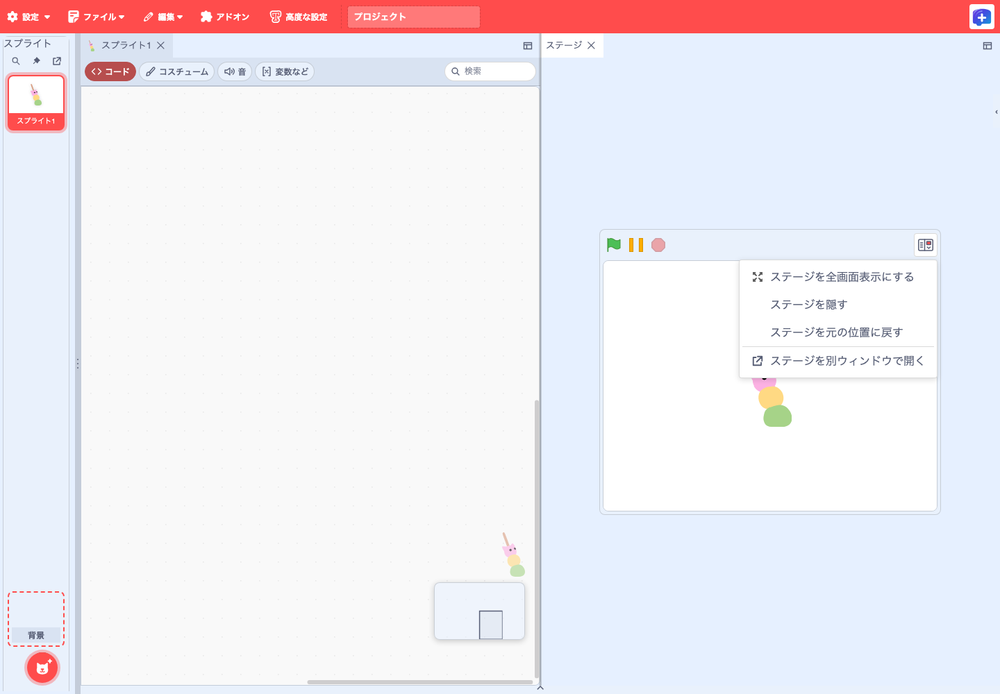
開発中 ペインの広さに合わせてステージを拡大・縮小する動作は、ローカル統合版で確認しています。公開版の通常表示ではステージの幅は480pxです。

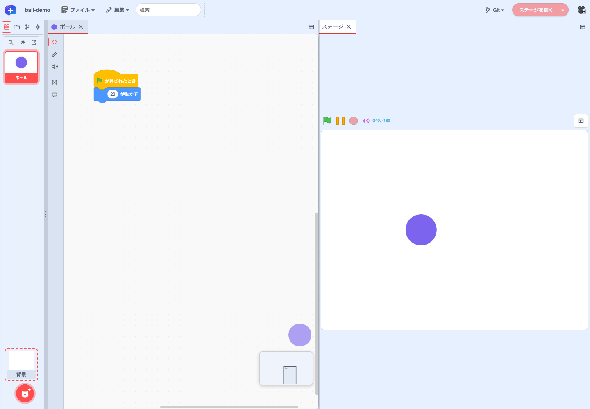
19. スプライト一覧を別ウィンドウに移す
Plus標準配置では、起動時から左側にスプライト一覧が固定されています。一覧上部の「アンドック」を押すと、一覧がブラウザーの別ウィンドウに移ります。別ウィンドウでもスプライトの選択・追加・削除ができます。右上の「レイアウト変更」から「元の画面に戻す（ドックする）」を選ぶと、左端に戻ります。同じメニューで、ウィンドウの最大化・最小化も選べます。

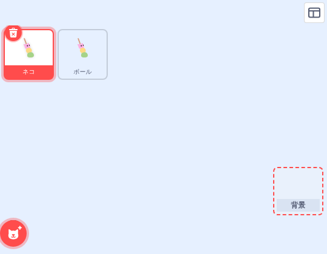
開発中 macOSのDesktop開発版では、ステージ・スプライト設定・一覧をアプリの別ウィンドウに移して元に戻す操作も確認しています。 一覧を直接別ウィンドウで開く · レイアウト変更メニュー · Desktopへの導入状況
20. 編集パネルとブロックパレットを別画面で開く
「編集パネルのレイアウト」から「パネルを別画面で開く」を選ぶと、そのパネルをブラウザーの別ウィンドウで開けます。ディスプレイが2台あるときに、コードとステージを別々の画面に置く使い方ができます。別画面のパネルは「このパネルを別画面から元に戻す」で元の位置に戻ります。
「ブロックパレットを別画面で開く」を選ぶと、横型パレットが別ウィンドウに移ります。左端の丸いカテゴリボタンでカテゴリを選び、ブロックをエディターのコード領域へドラッグして置きます。右上のボタンには現在の並び方が表示され、押すと「横並びにする」「縦並びにする」を切り替えられます。

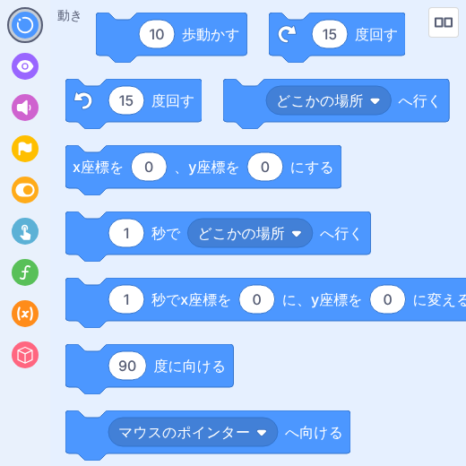
21. 次に開くときに作業配置を復元する
Plus配置では、タブの順序、ペインの分割と大きさ、選んでいたタブをブラウザーに記録します。同じブラウザーで前回の作品を開くと、読み込んだスプライトや作品内の文書を照合して配置を復元します。配置の記録を読み取れない場合や、作品の内容と照合できない場合は、初期配置で開きます。
| 保存される内容 | 保存先 | 操作 |
|---|---|---|
| タブの順序・分割・選択状態 | 同じブラウザープロファイル内のエディターの保存領域 | 同じエディターで前回の作品を開く |
| ブロックや素材、確定した作品内文書 | 作品のSB3または作品フォルダ | 編集を反映し、ファイルメニューで保存する |
ブラウザーに残るのは直近の配置です。作品の内容はSB3に保存します。従来の編集レイアウトや文書ダイアログを使うには、作品を保存してから twPlusDockview=0 を指定して開き直します。Desktop開発版で直接開いた外部YAMLファイルのタブは、復元対象から外れます。 再起動後の配置復元
ブロックや文書を編集する
22. 横型パレットでブロックを探して置く
Plus配置では、コード画面上部のカテゴリをクリックすると、その下にブロックの小窓が開きます。使いたいブロックをコード領域へドラッグします。変数や自分で定義したブロック、追加した機能拡張のブロックも同じ方法で選べます。小窓を閉じるにはEscを押すか、小窓の外をクリックします。
小窓の上部にある「ブロックを検索」に語句を入れると、そのカテゴリの見出しとブロックの表示名の部分一致で絞り込めます。日本語入力にも対応し、絞り込んだブロックもそのままドラッグして置けます。一致しないときは「一致するブロックがありません」と表示されます。

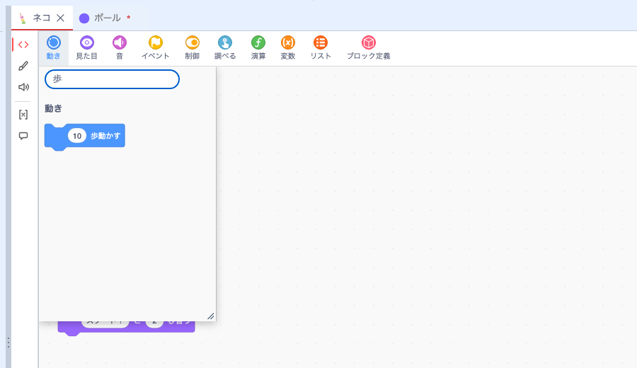
23. カテゴリの小窓を見やすい大きさにする
横型パレットでは、小窓の右下にある斜線をドラッグして幅と高さを調整できます。変更したサイズはカテゴリごとにブラウザーに保存されます。ペインや画面が狭いときは表示できる範囲に収まり、十分な広さに戻ると保存したサイズで開きます。

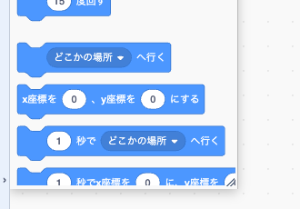
大きな画面でパレットを常に表示しておきたいときは、ブロックパレットを別画面で開くこともできます。 小窓のリサイズ
24. カテゴリの順序を変え、ブロックを整理する
カテゴリを長押しし、移動先を示す印に合わせて離すと並べ替えられます。ドラッグ中はカテゴリのプレビューが表示されます。パレットの外で離すかEscを押すと取り消せます。ページを再読み込みすると初期の順序に戻ります。twPlusHorizontalBlockPalette=1 を付けて起動した場合は、パレットを右クリックして横表示と縦表示を切り替えられ、並べ替えた順序も引き継がれます。

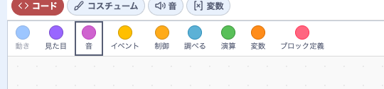
コード領域からブロックをパレットにドラッグすると、そこで離せば削除される位置にゴミ箱が表示されます。右クリックメニューには操作アイコンが表示されます（33章）。 カテゴリの並べ替え · 削除予告
25. ミニマップとズームで長いコードを移動する
Plus配置では、コード画面右下のミニマップでブロック全体の位置を見渡せます。枠は現在の表示範囲です。離れたブロックへ移動するときは、ミニマップ内の移動先をクリックするか、枠をドラッグします。下に並ぶボタンで縮小・拡大したり、倍率を初期値に戻したりできます。

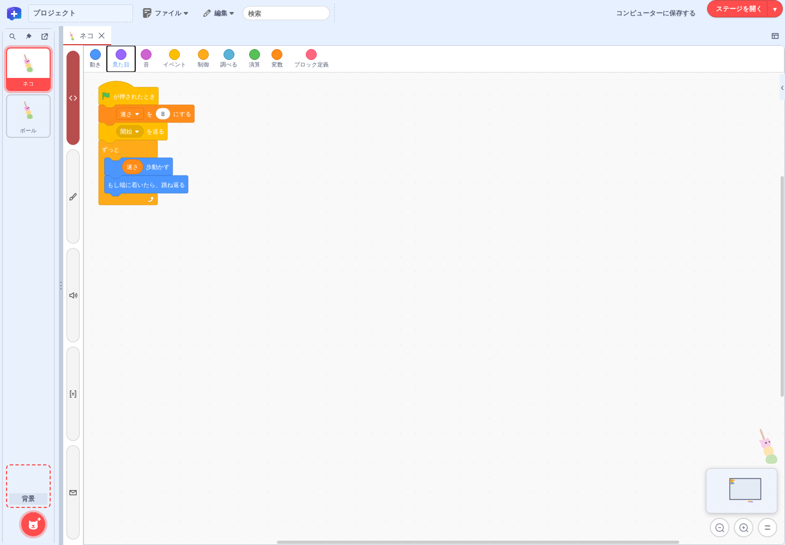
ミニマップを外すには twPlusWorkspaceMinimap=0 を指定します。 ミニマップの操作 · ズームと配置

27. 作品全体を検索し、選択箇所を置換する
最上段の検索欄に語句を入力すると、すべてのスプライトとステージを横断して検索し、結果を種類ごとにまとめて表示します。結果を選ぶと、該当するスプライトのコードや素材が開き、パネルはそのまま開いたままになるので、続けて置換できます。Enterキーで選ぶ場合は、移動と同時にパネルを閉じます。
検索と置換は1つのパネルにまとまっています。⌘F（WindowsはCtrl+F）で検索欄にカーソルが移り、⇧⌘F（WindowsはCtrl+Shift+F）または「編集」メニューの「検索と置換」で同じパネルの「置換後の文字列」の欄に移ります。Escapeキーで閉じます。

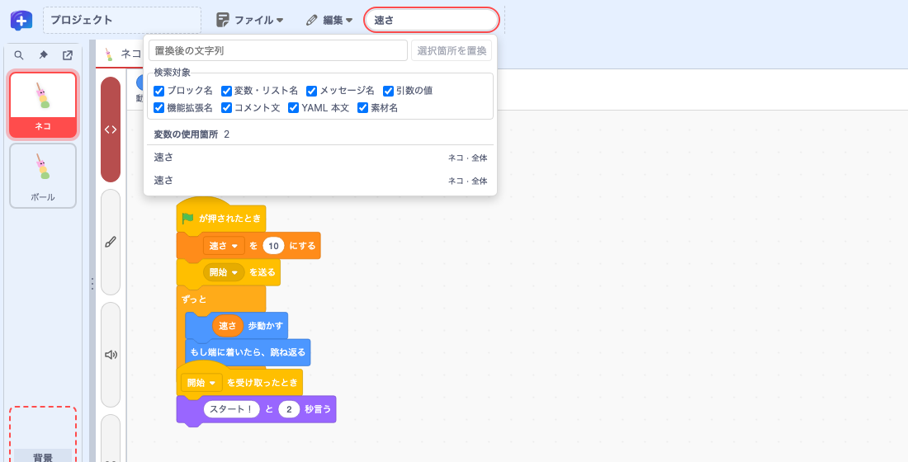
| 検索対象 | 結果の見出し |
|---|---|
| ブロック名 | ブロック |
| 変数・リスト名 | 変数の使用箇所、リストの使用箇所 |
| メッセージ名 | メッセージの送受信 |
| 引数の値 | ブロックの引数値 |
| 機能拡張名 | 機能拡張の使用箇所 |
| コメント文 | コメント |
| YAML 本文 | YAML 本文（作品内の文書がある場合） |
| 素材名 | コスチューム、背景、音 |
選択箇所を置換する
「置換後の文字列」の欄は、パネルの中に常に表示されています。結果を一つ選び、「選択箇所を置換」を押すと、その1か所だけを置き換えます。作品全体を一括で置き換える操作はありません。置き換えられない結果には「閲覧専用」と表示されます。
YAML本文の結果では、ボタンが「プレビューで置換」になります。該当する位置を示したプレビューで置換後の内容を確かめ、文書の検証に通った場合に保存されます。置換した内容を作品ファイルに残すには、最後にSB3を保存します。
28. ブロックの値をフォームで編集する 一部の機能拡張で利用可能
フォーム編集に対応する拡張を使うと、ブロックの引数を項目ごとの入力欄で編集できます。たとえば場面名と表示時間を1つのJSON文字列で保存するブロックでも、それぞれの欄に分けて入力できます。
拡張開発者は、保存するデータのJSON Schemaを用意し、対象ブロックと引数を指定して登録するだけで、そのブロック専用のフォームを自動生成できます。 エディターはスキーマから入力欄を組み立て、必須項目や値の範囲を検証します。
- 対応ブロックをコード領域に置き、ブロック上の「ブロックを編集」アイコンを押します。
- フォームで値を変更します。表示される項目は拡張ごとに異なります。
- 「すべて保存」を押すと、検証に通った値がブロックに反映されます。編集中の変更を取り消すには「キャンセル」で閉じます。
- 作品ファイルに残すには、続けて「ファイル」メニューから保存します。

入力の誤りを、その場で見つける
図のフォームで指定できる表示時間は1〜60秒です。0を入力すると範囲外であることが表示され、値を直すまで保存できません。入力の条件は拡張が定めます。

入れ子のブロックを編集する
拡張が親子のブロックを編集対象に登録していれば、同じフォームでそれぞれの値を変更できます。対応する数値・文字列・選択肢の固定入力も専用欄で編集できます。フォームで保存した変更は、コード画面で1回の「元に戻す」で戻せます。
変更・検証・取消
ブロックへ反映／元に戻す
SB3を手元へ
拡張作者向けの入口とサンプルはフォーム型ブロックエディターの仕様にあります。
29. 外部YAMLと作品内の文書・ブロックを使い分ける 一部の機能拡張で利用可能
対応拡張が登録した文書を「データソース」ブロックのファイルアイコンから開けます。Plus配置では作業領域のタブに表示されます。文書によってブロックの表示名や選べる形式が異なります。
文書の設定には、どこから読み込むかを決める「参照元」と、テキストやブロックを選ぶ「形式」があります。参照元の変更に対応する文書では「SB3内のファイル」と「外部URL」を選べます。ブロックに変換できるかどうかは、文書を提供する拡張が決めます。
ファイルアイコン
提供元が対応する表現
作品の文書へ反映
外部URLには、ブラウザーからの取得を許可したHTTPSのURLを指定します。「取得してプレビュー」で内容を確かめ、「参照元を検証・保存」で適用します。外部の台本を編集したい場合は、参照元を「SB3内のファイル」に変更して保存し、作品に取り込んだコピーを編集します。
| 形態 | 文書の置き場所 | 向いている作業 |
|---|---|---|
| 外部YAMLテキスト | HTTPSの配信元。作品には参照先を記録 | 作品と別に管理する台本を読み込む |
| SB3内のYAMLファイル | 原文を作品内のファイルに同梱 | 作品と一緒に渡す。原文を編集する |
| SB3内の汎用YAMLブロック | キー・値・リストを汎用ブロックで表現 | 階層を見ながら、項目や順序を変える |
| SB3内の専用ブロック | 文書のスキーマに沿った専用ブロックで表現 | 場面やせりふなど、作品の用語で編集する |
「形式」を選ぶと変換後のプレビューが表示されます。ブロック形式のプレビューは閲覧用です。「表示されている形式に変換して検証・保存」を押して確認すると、検証を経て文書に反映されます。編集中のブロックを別形式に変えるときは、変更を原文へ反映してから変換します。作品ファイルに残すには、最後にSB3を保存します。YAML本文は作品全体の検索の対象にもなります。
手元のVS Codeで原文を編集する
公開版のブラウザー画面でも文書を表示・変換・検証できます。VS Codeを起動するには、Node.jsとVS Codeを用意し、ローカルの補助プロセスが配信するエディターを開きます。「外部エディタで編集」で原文の作業コピーを開き、VS Codeで保存します。エディターに戻り、「表示されている形式に変換して検証・保存」で作業コピーを文書へ反映してからSB3を保存します。
30. 作品内YAMLをタブに開いてコードと並べる 一部の機能拡張で利用可能
Plus配置で、対応するデータソースブロックのファイルアイコンを押すと、文書がコードやステージと同じ作業領域にタブとして開きます。同じファイル名でも別の文書は別タブで開けます。タブを別のペインへドラッグするとコードと並べて作業でき、移動しても下書きは残ります。
変更が残ったタブを閉じると、「保存して閉じる」「破棄して閉じる」「キャンセル」を選べます。作品ファイルに残すには、文書を保存したあとに「ファイル」メニューからSB3も保存します。
Web版で従来の文書ダイアログを使う場合は、文書とSB3を保存し、URLに twPlusDockview=0 を加えて開き直します。この設定では作業領域の分割もオフになります。
31. 素材を見たり再生したりして選ぶ 一部の機能拡張で利用可能
公開された紙芝居拡張rc.87では、編集用作品にある素材ブロック（Asset）のアイコンを押すと、フォームと一緒に素材のプレビューが開きます。素材の指定を変えると、保存前に新しい画像を見たり、音声や動画を再生したりできます。画像や動画の寸法、ファイルサイズ、素材の保持形態も確認できます。対応するTeachable Machineの認識モデルでは、カメラやマイクを開始して認識結果を試せます。

rc.87の素材プレビューは既定で有効です。フォームだけを開く場合は、エディターの起動URLに twPlusBlockPreview=0 を指定します。場面や動作のプレビューには別途、有効化の指定が必要です。
32. 場面や動作をプレビューしてから反映する 一部の機能拡張で利用可能
拡張がプレビューを登録したブロックで、フォームの下書きを使って表示や動作を確かめられます。たとえば紙芝居の対応する吹き出しブロックなら、せりふや表示時間を変えて見え方を確認できます。
紙芝居拡張rc.87で場面や動作を試すには、エディターの起動URLに twPlusBlockPreview=1 を指定し、対応する場面・動作ブロックを含む編集用作品を開きます。
文と表示時間を調整
読める長さかを確認
確定した値をブロックに反映
気に入った設定は、フォームの「すべて保存」でブロックに反映します。拡張が追加する操作ボタンは、メニューバー右端の操作ボタンの領域に表示されます。表示される条件と動作は拡張ごとに異なります。たとえば紙芝居の制作中に表示されるリロード操作は、紙芝居拡張が提供します。
素材とスクリプトを再利用する
33. スクリプトとステージを別作品へ転送する
TurboWarp Plus Editorには、編集画面の下端にあったバックパックはありません。スクリプトの再利用には、コピー・貼り付けや .blocks3 の書き出し・読み込みを使います。ステージは .stage3、スプライト全体は .sprite3 で別の作品へ移せます。
移したいスクリプトのブロックを右クリックします。「スクリプトを書き出し」と「コピー」は、右クリックしたブロックを含む、つながった一組のブロック全体に適用されます。転送先ではコード領域の空白を右クリックし、ファイルなら「スクリプトを読み込み」、コピーした内容なら「貼り付け」を選びます。コピーと貼り付けには、編集メニューやCtrl／Cmd+C・Vも使えます。

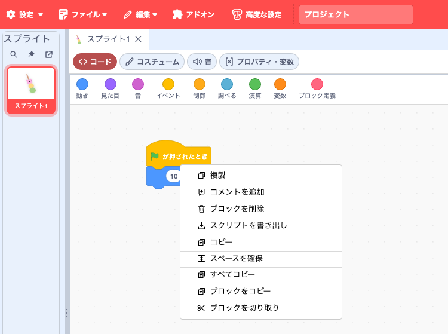
- .blocks3 にはスクリプトと、それが使うブロック定義・変数・リスト・メッセージ・拡張の情報が含まれます。同じオリジンで開いたウィンドウ間では、OSのクリップボードへのアクセスを許可していなくてもコピーと貼り付けができます。別のオリジン間では、対応ブラウザーとクリップボードの読み取り許可が必要です。
- .stage3 は、Plus配置なら背景タイル、Scratch配置ならステージを右クリックして書き出します。Scratch配置で取り込むには、背景の「選ぶ」メニューで「ステージを読み込み（追加）」を選びます。背景・音・スクリプトが現在のステージに追加されます。
- 変数やリストの名前と範囲・種類が一致する場合は、読み込み先の項目とその値を使います。名前が衝突するブロック定義や素材は必要に応じて改名します。計算で決まる背景・音の名前や番号は自動変換の対象外です。
- 拡張を実行できるかどうかは、転送先の設定や承認で決まります。
34. バンドル素材を背景・コスチューム・音に追加する
紙芝居などが使う画像や音を、スプライトやステージでも使いたいときに利用します。バンドルに含まれる元の素材は残り、選んだ素材が背景・コスチューム・音として作品に加わります。
「ファイル」→「組み込みデータ…」を開き、上部の「バンドル素材を作品に追加…」を押します。対応する素材を含む作品で「バンドル素材」「追加する種類」「追加先」を選び、「作品に追加」を押します。追加した内容を残すにはSB3を保存します。対応素材のない作品では、追加できる画像や音がないことが表示されます。
| 素材 | 追加する種類 | 追加先 |
|---|---|---|
| 画像（SVG・PNG・JPEG） | コスチューム | 選んだスプライト |
| 画像（SVG・PNG・JPEG） | 背景 | ステージ |
| 音声（WAV・MP3・Ogg） | 音 | 選んだスプライトまたはステージ |
保存して配布する
35. 上書き保存と名前を変えて保存を使い分ける
「ファイル」→「名前を変えて保存…」で、名前・保存形式・保存先を選んでSB3を作ります。

| 保存形式 | 保存される内容 |
|---|---|
| SB3（現在の格納方式） | 組み込みデータと機能拡張で設定した格納方式のまま保存する |
| SB3（設定対象の台本・素材を同梱） | HTTPS参照などに設定した台本・素材をSB3の中に入れて保存する。手元で編集を続けるためのSB3を作るときに使う |
- 保存先を選んだ場合。 選んだファイルが次の「保存」の上書き先になります。保存先の選択をキャンセルすると、以前の上書き先が残ります。
- ダウンロードした場合。 上書き先は設定されず、「保存」は選べないままです。
- 作品フォルダを開いた場合。 「保存」で作品フォルダを更新します。名前を変えて保存すると、作品フォルダとの接続は外れます。
保存に失敗したときや保存し忘れたときは、「ファイル」→「復元ポイント」で、TurboWarpが一定間隔でブラウザーに記録した復元ポイントから作品を戻せます。記録の間隔は1分〜30分ごと、または「なし」から選べます。復元ポイントは最後の手段であり、削除されることがあります。
36. 作品情報を記入してSB3に保存する
「ファイル」→「作品のプロパティ」で、タイトルや概要、作者名を記録できます。
- 作品タイトル、作品概要、作者名、連絡先を入力します。作品概要は複数行で書けます。
- 「適用」を押すと現在の作品に反映され、エディター上部のタイトルも更新されます。「キャンセル」を押すと入力中の変更を取り消せます。
- 「ファイル」から保存すると、作品ファイルに情報が記録されます。

作者名と連絡先：直近5件から選択、または新規入力
適用した作者名と連絡先は、それぞれ直近5件までブラウザーに記録されます。同じ値を使うと履歴の先頭に移り、選んだ候補は編集できます。SB3に入るのは今回適用した値です。ブラウザーの保存機能が使えない場合、候補の履歴はエディターを開いている間だけ利用できます。
連絡先のメールアドレスやmailto:はメール用リンクに、https:はWebリンクになります。メールリンクは利用環境のメールアプリ、Webリンクは別タブで開きます。作品概要はプレーンテキストとして入力し、プレビュー内のHTTPS URLをリンクとして開けます。
日時とSB3への保存
作成日時と最終更新日時は自動で記録されます。新規作品には作成日時が入り、日時の情報がない作品では「未記録」と表示されます。最終更新日時が変わるのは、作品情報やブロックなどの変更を含む作品ファイルの生成に成功したときです。
履歴選択・新規入力
現在の作品へ反映
情報・更新日時を記録
タイトル・情報を復元
この情報はPlus独自の作品情報としてSB3に保存します。作者名・連絡先は、SB3を共有すると受け取り手にも表示されます。標準Scratch/TurboWarpや作品情報を無効化したEditorで保存し直すと、独自情報が失われる可能性があるため、元のSB3を保持してください。保存仕様は作品情報と診断の仕様を参照してください。
37. 作品のURIを指定してキャッシュを整理する
「ファイル」→「作品のプロパティ」の「作品の URI」に、作品を識別するHTTPSのアドレスを入力し、「適用」を押します。ユーザー名・パスワードや # 以降のフラグメントを含むアドレスは使えません。適用したURIは、次に作品を保存したときにSB3に記録されます。

作品別にキャッシュを保存する拡張では、新しいURIが以降の書き込みに使われます。以前のキャッシュは残ります。キャッシュの実体はブラウザー内に保存されます。 作品URIの指定
38. 拡張コードの保存形式を選ぶ
拡張を追加するときは、「ファイル」→「機能拡張…」→「機能拡張の追加」で「TurboWarp Plus」の一覧から拡張を選び、「読み込み元」でコードを作品に入れるか、HTTPSの配信元から取得するかを指定します。「追加」を押してからSB3を保存すると、選んだ形式、コードを照合するSHA-256、実行条件が記録されます。
| 追加画面で選ぶ読み込み元 | 「機能拡張…」での表示 | 保存するものと開くときの動作 |
|---|---|---|
毎回取得するremote-non-cacheable | HTTPSから毎回取得 | HTTPS URLを記録します。開くたびに取得して照合します。 |
キャッシュを残す（既定）remote-cacheable | HTTPSから取得・キャッシュ可 | HTTPS URLを記録します。開く人が許可すると、照合済みのコードをブラウザーに保存して再利用できます。 |
作品の中からembedded-file | SB3内のファイル | コードをSB3内のファイルとして同梱します。 |
作品の中の data: アドレスからembedded-data | 作品JSON内のデータ | コードをdata URLとして作品データに同梱します。標準TurboWarpでもコードを読み込める形式です。 |
追加済みの拡張の形式を変える
「ファイル」→「機能拡張…」を開くと、作品で使用中の拡張ごとに現在の形式が表示されます。配信元のURLが記録されている拡張では形式を選び直せます。「格納方式を適用」を押し、SB3を保存します。
SB3：URL＋ハッシュ
内容を照合
SB3：コード＋ハッシュ
内容を照合
配信元から取得する形式では、URLが同じでも内容が変わると照合に失敗します。通信なしで開けるかは、必要なコードやデータが手元にそろっているかで決まります。コードを同梱した場合も、拡張が外部APIや画像などを取得するなら通信が必要です。対応拡張のフォームや文書編集にはPlus Editorを使います。
作品単位のキャッシュを整理するには作品のURIを使います。細かな制約・互換性はSB3保存形式と機能拡張一覧の仕様を参照してください。
39. ソースデータと素材をどの形式で保存するか選ぶ
「ファイル」→「組み込みデータ…」を開くと「作品データの形式」が表示されます。「アセット」欄で、背景・コスチューム・音などの素材ごとに保存形式を選びます。対応する拡張のYAMLなど、対象のソースデータが作品内にある場合は「ソースデータ」欄にも表示されます。HTTPSの形式では、その項目のURLを入力します。URLから取得した内容は、現在のデータとバイト単位で一致する必要があります。

| 画面で選ぶ形式 | 使い分け |
|---|---|
| 標準の格納方式を使う | その項目への個別指定を解除し、標準の方式で保存する |
| HTTPS から毎回取得 | 開くたびに配信元から取得する |
| HTTPS から取得・キャッシュ可 | 開く人が許可すると、照合済みのデータをブラウザーに保存して再利用できる |
| SB3 内のファイル | データを作品内の別ファイルとして一緒に渡す |
| 作品 JSON 内のデータ | 作品のJSONにデータを直接格納する |
「適用」を押し、SB3を保存します。設定した形式は次の保存に使われます。HTTPS参照に設定した項目を一時的に同梱したSB3が必要なときは、名前を変えて保存で「SB3（設定対象の台本・素材を同梱）」を選びます。設定した形式からデータを復元するには、Plusの拡張ローダーが有効なエディターを使います。HTTPS参照がある作品を開くと、取得先の一覧が表示され、取得を許可するか選べます。拡張のプログラム自体をどう保存するかは、拡張コードの保存形式で説明しています。 作品データの保存形式の実装
40. 作品を書き出して単一HTMLで配布する
「ファイル」→「書き出し…」を開き、「プロジェクトをパッケージ化する」を押します。書き出しに必要な作品データは出力に同梱されます。通常のScratch 3やTurboWarpのSB3なら標準のTurboWarp Packagerが開きます。Plus形式の拡張を記録した作品では、同じ操作でPlus専用の出力画面が開きます。

- Plusの出力画面で、すべてのPlus拡張が外部API・モデル・画像・音声などに依存していないことを確認します。
- 確認欄にチェックし、「確認してHTMLを生成」を押します。HTTPSで配信される拡張コードも、内容を照合したうえでHTMLに入り、サンドボックスの指定は保持されます。
- 生成したHTMLをダウンロードして開きます。カタログで信頼条件を満たす拡張は、同梱されたハッシュと照合して実行します。個別承認が必要な拡張は、HTMLを開くたびに実行許可を求められます。
必要な拡張を確認
外部依存がない作品はオフラインで動作します。外部API・画像・モデル等の資産を自動的に収集する機能ではありません。詳細はローダーとHTML出力の仕様を参照してください。